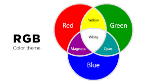

Het RGB-model bestaat uit pixels van de drie primaire kleuren rood, blauw en groen. Om veel andere kleuren te maken meng je die primaire kleuren met elkaar. Bijvoorbeeld rood en groen die samen geel maken. Wel komen er iets andere kleuren uit bij het mengen van kleuren bij het RGB-model dan bij het mengen van verf. Ook als alle pixels uit staan dan heb je standaard een zwart scherm. De computer kan geen procenten opslaan dus de hoeveelheid groen, blauw en rood wordt opgeslagen als decimalen>
